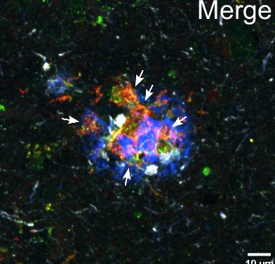
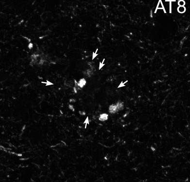
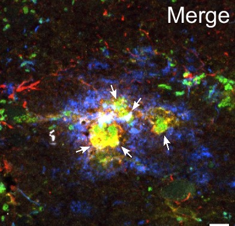
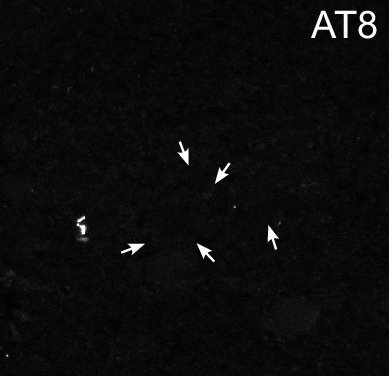

Plaques aren't the whole story. A brain's resilience explains a big share of Alzheimer's risk too.
Some people carry the chemistry of Alzheimer's for years and never develop dementia. A study that followed 3,119 older adults for a median of 13.7 years put a number on that resilience, and found it accounted for a share of dementia risk comparable to the disease's own markers.
Sister Mary was one of the 678 Catholic sisters who took part in the Nun Study, a long-running study of aging and Alzheimer's. By the account of the study's leader, David Snowdon, she had high scores on cognitive tests before her death at 101, yet her brain turned out to be full of the plaques and tangles that define Alzheimer's disease. As he wrote, she "maintained this high status despite having abundant neurofibrillary tangles and senile plaques, the classic lesions of Alzheimer's disease."
She wasn't a fluke. In 1988, a team led by Robert Katzman examined the brains of 137 nursing home residents whose memory and thinking had been tested while they were alive. Ten of them had been among the sharpest people in the building, yet their brains showed the changes of mild Alzheimer's, with plaque counts about 80 percent of those in residents who had died with dementia. Their brains were also heavier and held more large neurons. The authors suggested these people might simply have had "a greater reserve."
Doctors have seen versions of this ever since. Two people can carry similar amounts of Alzheimer's pathology, and one stays sharp for years while the other declines. Researchers call the difference reserve, or resilience. The idea is old, and researchers have measured it before, but rarely in so many people, for so long, with repeated samples of spinal fluid. A study published September 11 in Nature Medicine does that, and asks how much resilience adds to the picture. Its answer is a lot.
What the team did
The work comes from Jianping Jia's group at Xuanwu Hospital, Capital Medical University, in Beijing. The team followed 3,119 older adults in the China Cognition and Aging Study for a median of 13.7 years. Over those years they took repeated samples of cerebrospinal fluid, the liquid that bathes the brain and spinal cord, and repeatedly tested memory and thinking.
From those measurements they built two scores for each person. The first tracked pathology, using the ratio of two proteins in the spinal fluid. One is a form of tau with an extra phosphate attached, called p-tau181. The other is amyloid-beta 42, which drops in spinal fluid as it gets trapped in plaques in the brain. A rising ratio means more Alzheimer's changes.
The second score is the clever part. For each person, the team asked how fast their thinking would be expected to slip given their pathology, their age and their sex. Then they measured how fast it actually slipped. Someone whose thinking held up better than their biology predicted got a high resilience score. Someone who slid faster than expected got a low one.
Two scores, pulling in opposite directions
Both scores independently predicted who went on to develop Alzheimer's dementia, and they pulled in opposite directions. For every one standard deviation increase in the pathology score, the hazard of dementia, the moment-to-moment risk, was about 2.5 times higher. For every one standard deviation increase in resilience, it was about half, a hazard ratio of 0.51. Step for step, pathology was the stronger signal. Rising one standard deviation in pathology raised the hazard more than rising one standard deviation in resilience lowered it.
A standard deviation is a measure of spread. For a roughly bell-shaped spread, moving up one from the middle of the pack puts someone at about the 84th percentile. So picture two people with exactly the same amount of Alzheimer's chemistry in their spinal fluid, same age, same sex. The one sitting one step higher on resilience had about half the hazard of developing dementia at any given point during the study. One caution up front. Resilience was measured from the same kind of decline that leads to a dementia diagnosis, so some of this link is built in. More on that below.
Two more results make the finding stronger. In the paper's words, the two scores "contributed comparable, complementary shares of 10-year AD risk," and together they explained substantially more of the explainable risk than either one alone. They also interacted, meaning the effect of one depended on the level of the other. The lowest risk was in people with high resilience and low pathology, and the highest in people with high pathology and low resilience. The team then repeated the analysis in an independent group of people and found the same overall pattern.
Where to keep your guard up
The biggest caveat is built into the method. Resilience here is measured from how fast a person's thinking declined over the study, and a dementia diagnosis is largely a judgment that thinking has declined. So part of what the score captures is the outcome itself, arriving early. That is probably one reason its link to dementia looks so strong and so tight. The authors ran checks meant to rule out the earliest stages of disease driving a low score, which they call reverse-causation sensitivity analyses, and report that the results held. But the paper's summary doesn't say how far ahead of diagnosis the score was measured. Until that's clear, read the resilience score as a strong description of who fared better than expected, not a forecast made years in advance.
The study also doesn't tell us what resilience is made of. It's a statistical residual, the part of someone's course that their pathology, age and sex don't explain. Education, blood vessel health, genes and how the brain's networks are wired could all be in there, along with other brain diseases the spinal fluid test doesn't measure, undetected early disease and plain measurement noise. Everyone in the main group was part of one Chinese cohort, and the measures depend on repeated spinal taps and repeated testing that ordinary clinics don't do. And like any long observational study, it shows a strong association, not a mechanism.
What resilience looks like inside a brain
Other recent work is starting to fill in the biology. In June, a team led by Bart De Strooper at KU Leuven and the UK Dementia Research Institute published a study in Nature Medicine that mapped gene activity across slices of brain tissue. They compared 24 older adults, mostly in their 80s, eight with dementia, eight with plaques but no dementia and eight with neither, with 20 centenarians whose brains carried heavy amyloid. The centenarians had all been cognitively intact when they joined their study, though several declined later.


Age 103centenarian

The team found what looks like a tipping point. Because the brains were studied once, after death, the sequence is inferred from spatial patterns rather than watched over time. Around plaques, microglia, the brain's resident immune cells, show an early inflammatory program. Where tau, the protein whose spread tracks memory loss far more closely than plaques do, has built up, they show a later program. People in their 80s who had plaques but no dementia lacked that later program. In the centenarians it was present, but largely uncoupled from tau building up. As the announcement from VIB, the researchers' institute, put it, "resilience is not simply the absence of pathology." That suggests two different routes to resilience, and both hint at a moment in the disease that researchers may one day try to target. The groups were small, examined after death and not directly comparable, so this shows association, not cause.
And in October, a team led by Amar Sahay at Massachusetts General Hospital reported in Nature Neuroscience on a molecule that may be one of the body's own resilience signals. Nerve cells in the hippocampus, a memory hub, make more of an enzyme called PLA2G2F as mice age, and the team reports that it is associated with cognitive resilience in people too. Deleting it made aging worse, with lost synapses, inflamed immune cells and memory problems. Boosting it in aging mice prevented those changes and protected memory, apparently by reducing the fat droplets that build up in brain cells, including microglia, with age. The key experiments were in normally aging mice, backed by associations in human brain tissue and tests in lab-grown human microglia, so it's a lead, not a treatment.
Why this is hopeful
For two decades, much of the effort to slow Alzheimer's has aimed at one target, the amyloid that forms plaques. That work has paid off modestly. Today's plaque-clearing antibodies slow decline, though by a margin that's still debated, as we covered in our look at whether the new drugs work. The new study argues that pathology isn't the whole equation. Resilience adds comparable, complementary information about who develops dementia, and in the authors' words that calls for "therapeutic trial and prevention strategies that strengthen resilience alongside reducing pathology."
That reframing matters for anyone who has had a positive amyloid scan or blood test, or who carries a gene that raises risk. Katzman's ten residents and cases like Sister Mary had already suggested that having the chemistry of Alzheimer's in your brain doesn't seal your fate. This study suggests that a large share of the risk sits in a second dimension that varies a lot between people. Whether any of it can be deliberately raised is an open question this study wasn't built to answer.
What builds it isn't settled. In a post about the paper, Jia wrote that resilience may reflect "the combined influence of lifelong experiences," and pointed to education, vascular health, lifestyle, genetics and how brain networks are organized. Some of those are fixed. Others, like blood pressure, line up with the midlife risk factors we wrote about in the 12.6-year gap between a clean midlife and a maxed-out one. But this study didn't test any of them, and none has yet been shown in a trial to raise resilience in this sense.
Having the chemistry of Alzheimer's in your brain doesn't seal your fate.
The bottom line
Sister Mary's brain was a puzzle for decades. This study measures that pattern across thousands of people. Across 3,119 people followed for well over a decade, how well a brain held up against its own pathology accounted for a share of dementia risk comparable to the pathology itself, though step for step the pathology score was the stronger of the two. Each step up in resilience came with roughly half the hazard of dementia at any given point in the study. The score is partly a description of how people fared, and it doesn't yet tell us how to raise it. But it points the field toward a second question worth chasing, which is what lets some brains hold up and whether that can be borrowed. That's a hopeful thing to learn in Alzheimer's Awareness Month.